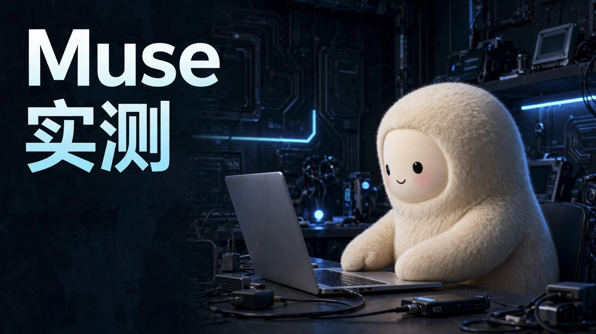

0:00开头
Meta 最近发布了 Muse，号称能"替你干活"。它到底是真能干活，还是换了个名字的聊天机器人？我给它派了五个任务，从查资料、写代码，到做图、生成视频，一个个测给你看。

封面由 Muse 生成（实测场景三），中英文标题都没有错字。
Meta 最近发布了 Muse，号称能"替你干活"。它到底是真能干活，还是换了个名字的聊天机器人？我给它派了五个任务，从查资料、写代码，到做图、生成视频，一个个测给你看。
Muse 是一个个人 AI 智能体。聊天 AI 给你答案，Muse 给你结果。它在云端有自己的电脑，会查资料、写代码、做图做视频，还能连上你的邮箱和日历。打开 App 就是一个聊天窗口，一句话说清楚要什么就行。
第一个，信息整理。我让它对比三款降噪耳机。头像下面先显示"努力工作中"，接着变成"搜索参数"，最后价格、降噪、续航、重量的对比表就出来了，还附了一句购买建议。
第二个，写代码。我要一个番茄钟网页，把设计方向写清楚：像日式厨房计时器那样安静、有质感，三种模式、按钮状态都要讲究。它直接在 App 里给了能用的预览：刻度表盘、大号数字，运行时只突出"暂停"。我又让它做了一个咖啡店官网，雾里的群山、陶杯、大号宋体，审美完全在线，连配图都是它自己生成的。
第三个，做图。我让它画一张这期视频的封面：一个毛茸茸的小机器人坐在电脑前，左边写上"Muse 实测"。出来的图，中英文标题一个错字都没有。你现在看到的封面，就是它画的。写实人像它也能画：咖啡店里看书的女生、雨天窗边的古风美女，皮肤纹理、碎发、胶片颗粒，都像真拍的。
第四个，生成视频。我让它以这张封面为参考，让小机器人动起来：先打字，再抬头对镜头挥手。五秒的视频，角色、场景都和封面一模一样，动作也完全按我说的来。
第五个，日程和规划。让它约会议、写邀请邮件，它会弹出连接日历的按钮，但没有卡住，先把邮件写好了。让它规划上海出发的周末游，它推荐了杭州，连灵隐要提前一天预约都提醒到了。发送、预订这些关键步骤，它都会先停下来问你。
短板也有。第一，模型响应偏慢：它要一步步查资料、搭项目、出图，每个任务都得等一会儿，不像聊天 AI 那样秒回。第二，对中国古风审美的理解一般：我要宋代古风美女，它画出来的衣服是带盘扣的交领，盘扣是明清以后才流行的，一看就不是宋代的样子。第三，它的连接器里暂时没有飞书、微信这类国内应用。
Muse 适合事情多、又不想在几个 App 之间来回切的人：查资料、写个小工具、做张图、出段视频，一句话就能拿到能用的结果。只想聊聊天的话，普通聊天 AI 就够了。
你最想让 Muse 帮你做什么？评论区告诉我，下期挑几个来实测。